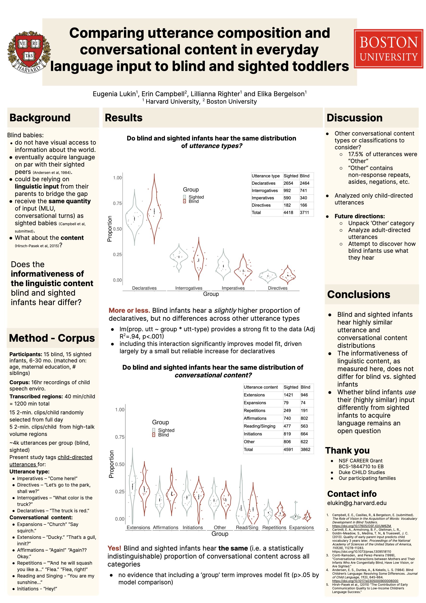

<div class="container" id="main">
 <div class="row">
  <div class="12u">
   <div class="content">
    <!-- Content -->
    <article class="box page-content">
     <header>
      <h2>
       Comparing utterance composition and
       <br/>
       <br/>
       conversational content in everyday language input
       <br/>
       <br/>
       to blind and sighted toddlers
      </h2>
      <h3>
       Lukin, Campbell, Righter &amp; Bergelson (2022)
      </h3>
      <h3>
       Presented at MPAL 2023 in Nijmegen, Netherlands, and BUCLD 48 in Boston, MA
      </h3>
     </header>
     <div class="3u 12u(mobile)">
      <section class="box feature">
       <a class="image featured" href="../../files/presentations/MPAL_BUCLD _Input Content.pdf">
        
       </a>
      </section>
     </div>
     <h4>
      Abstract
     </h4>
     <p>
      During language acquisition, children integrate sensory and linguistic input, e.g. by looking at named referents. And yet, without visual input, congenitally blind adults generally attain equivalent language outcomes to sighted adults (Perez-Pereira &amp; Conti-Ramsden, 1999). We consider whether parents of blind infants tailor speech to their children as a compensatory mechanism for missing visual input, as parents do in other contexts (e.g. Vigil et al, 2005). Specifically, we investigate whether blind vs. sighted infants hear more speech that is high in linguistic informativity (i.e. features more information-adding utterance types and content). Linguistic informativity in the input has been linked to better language outcomes (e.g. conversational skills and expressive language) in research with sighted children (Romeo et al., 2022; Wong et al., 2012). However, the limited small-n studies with blind children suggest their input contains more directives and imperatives, and fewer descriptions than sighted children’s input (Andersen et al., 1993; Moore &amp; McConachie, 1994), countering the notion that blind children’s parents boost informativity.
We seek to (1) replicate prior results concerning blind children’s input and (2) expand them by considering conversational content as a proxy for descriptiveness (wherein extensions and expansions are more informative than repetitions and affirmations ; Clark, 2014; Cleave et al., 2015). To account for other prevalent content categories we also consider initiations and reading/singing. Differences in utterance types or content would suggest that parents of blind vs. sighted children adapt the input to alter informativity; a lack of differences in the inputthereof would suggest blind children adapt their learning to compensate for missing visual information from otherwise informationally-comparable speech.
We tested this in a corpus of daylong LENA recordings of blind and sighted children, matched for gender, age, number of siblings, and maternal education (n=11/group) aged 6.4–30.3mo. (mean = 14.4mo.) We annotated 20 2-minute segments from each daylong recording (880min. total) using the ACLEW scheme (Casillas et al., 2017). Child-directed utterances from all non-target-child speakers  (Sighted=2,972, Blind=2,854) were categorized for type (Imperatives, Directives, Interrogatives, Declaratives; Table 1) and content (Expansions, Extensions, Repetitions, Affirmations, Initiation, Reading/Singing, Other; Table 2). We tested for group differences in the proportion of each utterance type and content category, and found that the input across our measures did not differ for blind vs. sighted children’s input (all multiple-comparison corrected ps&gt;.05 by Wilcoxon or T-Test, as appropriate; see Figure 1 and 2)
Broadly put, we found that both in raw quantities and relative proportions, the linguistic informativity of blind and sighted children’s input was highly similar (see Tables/Figures). Thus, in our larger-n language samples from everyday interactions we failed to replicate prior results suggesting blind children hear more imperatives and directives than their sighted peers. Nor did we find that they heard more potentially “helpful” utterance types or content categories that facilitate description (e.g. extensions; Clark, 2014). This in turn suggests that boosted linguistic informativity of the input (as operationalized here) is likely not a central compensatory mechanism for blind children’s language acquisition.
     </p>
    </article>
   </div>
  </div>
 </div>
</div>
